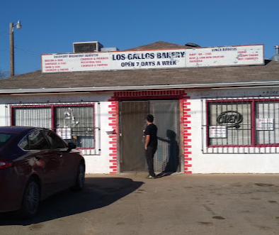
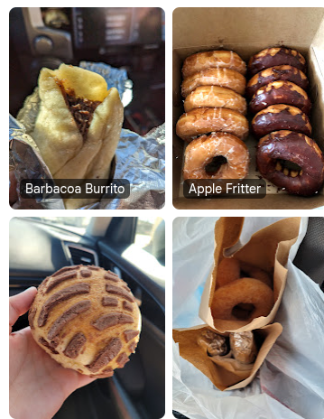

Barbacoa Burrito
A hearty, savory favorite for a satisfying start to the day.
From sweet pan dulce and glazed pastries to hearty barbacoa burritos, stop by Los Gallos for the comforting flavors you love.


Whether you're in the mood for a savory bite or something sweet, there's a little comfort waiting here.
A hearty, savory favorite for a satisfying start to the day.
Golden, glazed, and ready to make your coffee break better.
Colorful bakery classics made for sharing—or keeping all to yourself.
Los Gallos Bakery & Restaurant brings together the comfort of a neighborhood bakery and the bold, familiar flavors of Mexican food. Come by for a pastry, pick up a barbacoa burrito, or grab something delicious to take with you.
We're proud to be part of the San Angelo community. Stop in and discover a new favorite.
Call (325) 351-9022“A great little stop for authentic flavors and something sweet.”
Rated 4.6 by local customers on Google
Stop in for a fresh pastry, a filling bite, or something to take on the go.